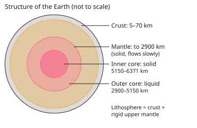

A-level Geography Year 12 · Topic 7
Tectonic processes and hazards
Tectonic processes and hazards explains why earthquakes, volcanoes and tsunamis happen, and how to reduce their impacts.
We will study the Earth's structure, plate tectonic theory, plate margins and hotspots.
Then we look at volcanic and seismic hazards, why people live in hazardous places, disaster risk models, contrasting case studies, and hazard management.
- 8 subtopics
- 322 questions
- Free: 7.1 notes and 10 questions
In this topic
- 7.1Earth structure and plate tectonic theory: evidence and driving mechanismsFree below · 44 questions
- 7.2Plate margins and hotspots: constructive, destructive, conservative and collision processesOpen in Full Marks · 33 questions
- 7.3Volcanic hazards: eruption types, primary and secondary hazards, VEIOpen in Full Marks · 39 questions
- 7.4Seismic hazards: earthquakes, tsunamis, liquefaction and magnitude measurementOpen in Full Marks · 37 questions
- 7.5Global distribution of hazards and why people live in hazardous areasOpen in Full Marks · 32 questions
- 7.6Disaster risk: hazard risk equation, vulnerability, capacity, Degg and Park modelsOpen in Full Marks · 73 questions
- 7.7Impacts and responses: social, economic and environmental effects with contrasting case studiesOpen in Full Marks · 31 questions
- 7.8Hazard management: prediction, monitoring, protection, preparedness and the hazard management cycleOpen in Full Marks · 33 questions
7.1 · Free notes
Earth structure and plate tectonic theory: evidence and driving mechanisms

Key points
- The Earth has four main layers: a thin crust (oceanic about 5–10 km, continental about 30–70 km), a mantle about 2,900 km thick, a liquid outer core (2,900–5,150 km) and a solid inner core (to 6,371 km, above 5,000 °C).
- Oceanic crust is basaltic, thin, dense and young (under about 200 million years old). Continental crust is granitic, thicker, less dense and much older (up to about 4 billion years).
- The lithosphere is the crust plus the rigid uppermost mantle (about 100 km thick). It is broken into tectonic plates that move over the weaker, ductile asthenosphere.
- Seismic evidence: P-waves pass through all layers, but S-waves cannot travel through the liquid outer core, which creates an S-wave shadow zone. Speed changes at the Moho show the crust–mantle boundary.
- Continental drift (Wegener, 1912) was supported by the jigsaw fit of continents, matching fossils (e.g. Mesosaurus), matching rock sequences and mountain belts, and glacial deposits in the tropics. It was rejected at first because it had no convincing mechanism.
- Seafloor spreading (Hess, 1960s): ocean crust is youngest at the mid-ocean ridge and older with distance. Sediment is thinnest at the ridge and thickens away from it.
- Palaeomagnetism: symmetrical bands (magnetic striping) of normal and reversed polarity either side of a ridge record reversals of the Earth's field as new crust forms. This is strong evidence for spreading.
- Modern evidence includes GPS/satellite measurements of plate movement (about 1–15 cm per year), earthquake and volcano distributions that trace plate edges, and Benioff zones that show subducting slabs.
- Driving mechanisms: slab pull (dense, cold lithosphere sinking at subduction zones, usually seen as the main force), ridge push (gravity sliding of plate away from the elevated ridge) and mantle convection (heat from the core and radioactive decay).
- Hotspots are fixed mantle plumes with plates moving over them, producing volcanic chains that get older away from the plume (e.g. Hawaii). In the exam, link each piece of evidence to the theory and evaluate it.
In more detail
- Layers: oceanic crust is 5–10 km thick and continental crust 30–70 km; the mantle extends about 2900 km down; the inner core is solid and around 5400 °C.
- Seismic shadow zone: S-waves are not detected between about 104° and 140° from an earthquake, showing the outer core is liquid.
- Wegener's evidence: Mesosaurus fossils in both South America and Africa, matching rock sequences and glacial scratches.
- Spreading rates: the Mid-Atlantic Ridge widens about 2.5 cm a year; parts of the East Pacific Rise spread up to about 15 cm a year.
- Driving force: slab pull, the weight of cold, dense plate sinking at subduction zones, is now thought to be the strongest force.
Practice
Earth structure and plate tectonic theory: evidence and driving mechanisms: 10 questions
Pick an answer to check it, or open the answer for the explanation.
1. Which layer of the Earth is liquid and made mainly of iron and nickel?
- Asthenosphere
- Lower mantle
- Outer core
- Inner core
Show answer
C: Outer core. The outer core (about 2,900–5,150 km deep) is molten iron–nickel. The inner core is solid because of the immense pressure; the mantle is solid rock that flows very slowly.
2. The lithosphere is best described as…
- The crust and rigid uppermost mantle
- The whole mantle
- The crust only
- The outer core and lower mantle
Show answer
A: The crust and rigid uppermost mantle. The lithosphere is the rigid outer shell: crust plus uppermost mantle (about 100 km). It is broken into plates that move over the weaker, ductile asthenosphere.
3. Which statement about oceanic and continental crust is correct?
- Both crust types are equally dense but differ in thickness
- Oceanic crust is thicker and less dense than continental crust
- Continental crust is mainly basalt and always under 200 Ma old
- Oceanic crust is thinner, denser and younger than continental crust
Show answer
D: Oceanic crust is thinner, denser and younger than continental crust. Oceanic crust is basaltic, about 5–10 km thick, dense and young because it is recycled at subduction zones. Continental crust is granitic, thicker, less dense and much older.
4. Symmetrical stripes of normal and reversed magnetism either side of a mid-ocean ridge are evidence for…
- Glacial rebound
- Hotspot volcanism
- Continental collision
- Seafloor spreading
Show answer
D: Seafloor spreading. New basalt records the Earth's magnetic field as it cools. Mirror-image bands on both sides of the ridge show crust forming and moving apart, which supports seafloor spreading.
5. Basalt 200 km from a ridge axis is dated at 10 million years old. What is the average spreading rate on that side?
- 200 cm/yr
- 2 cm/yr
- 20 cm/yr
- 0.2 cm/yr
Show answer
B: 2 cm/yr. 200 km = 20,000,000 cm. Dividing by 10,000,000 years gives 2 cm per year, typical of the slow-spreading Mid-Atlantic Ridge.
6. How does the age of ocean floor change with distance from a mid-ocean ridge?
- It is the same everywhere
- It is oldest at the ridge crest
- It gets older away from the ridge
- It gets younger away from the ridge
Show answer
C: It gets older away from the ridge. Crust forms at the ridge, so it is youngest there. Older crust is carried progressively further away, and the oldest ocean floor is about 180 million years old.
7. Which is generally regarded as the most important force driving plate movement?
- Magnetic attraction
- Ridge push
- Slab pull
- The Earth's rotation
Show answer
C: Slab pull. Slab pull happens when cold, dense oceanic lithosphere sinks into the mantle and drags the rest of the plate with it. It is usually considered stronger than ridge push.
8. Why was Wegener's continental drift hypothesis widely rejected at first?
- The continents do not fit together
- There was no fossil evidence
- He could not explain a mechanism for moving continents
- Palaeomagnetism disproved it
Show answer
C: He could not explain a mechanism for moving continents. Wegener had good evidence (fit, fossils, rocks) but could not show what force moved continents through ocean crust. Later seafloor evidence and convection ideas supplied a mechanism.
9. Volcanic islands in the Hawaiian chain get older to the north-west. This is best explained by…
- A mid-ocean ridge running through the chain
- The Pacific plate moving over a fixed mantle plume
- Subduction of the Pacific plate beneath Hawaii
- Collision of two continental plates
Show answer
B: The Pacific plate moving over a fixed mantle plume. A stationary mantle plume melts the crust above it. As the plate moves north-west, old volcanoes are carried away and new ones form over the plume, giving an age progression.
10. Why does an S-wave shadow zone occur on the opposite side of the Earth from an earthquake?
- The outer core is too hot for any seismic wave
- S-waves are faster than P-waves so are lost
- S-waves cannot travel through liquid, so they are stopped by the outer core
- The outer core is solid and reflects S-waves
Show answer
C: S-waves cannot travel through liquid, so they are stopped by the outer core. S-waves are shear waves and cannot pass through liquids. Their absence beyond about 105° from the focus shows the outer core is liquid.
Keep going in Full Marks
Full Marks has 44 questions on Earth structure and plate tectonic theory: evidence and driving mechanisms (34 more than here), set out in practice levels. You also get notes and 3D models for all 8 subtopics of Tectonic processes and hazards, plus games, timed exams and past papers.
On your exam board
Not in the AQA and OCR A specifications.